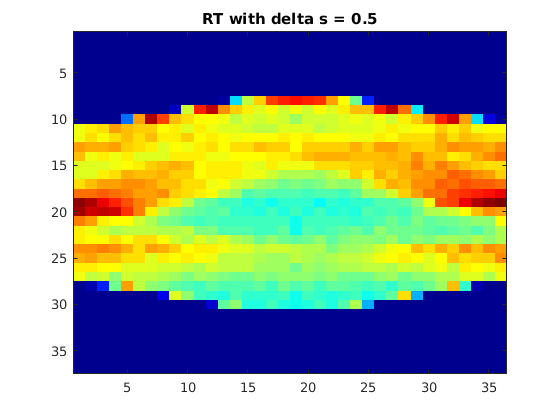
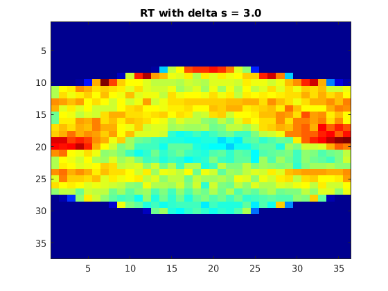
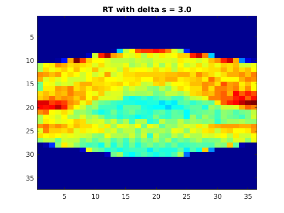
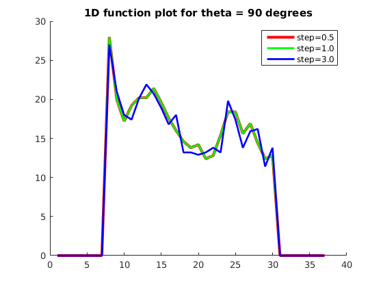
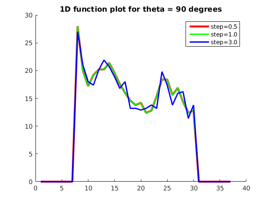
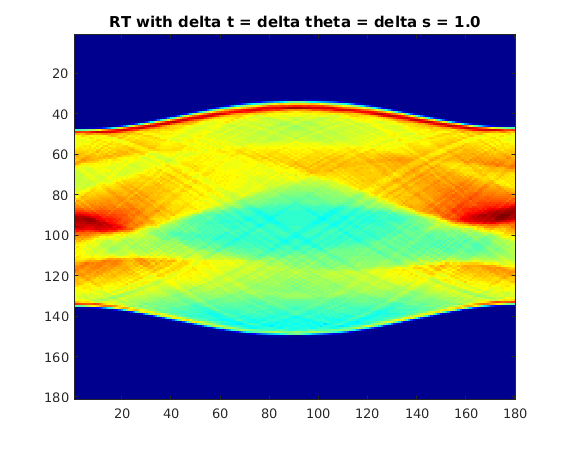

Contents
Question 1
image = phantom(128);
Justification of choices of Interpolation scheme and step
Interpolation scheme : Bilinear interpolation. (The default in interp2)
This is because nearest neighbour though fastest would be very bad scheme
for approximation of line integrals. Bilinear interpolation is fast as
well as serves a good way to approximate line integrals.
Step size : 1 pixel distance. For <1 pixel step size, the improvement is
not much whereas for >1, the smoothness of the radon transform image is
lost.
Comparision of Radon transforms
rt_half = myRadonTrans(image,0.5); rt_one = myRadonTrans(image,1.0); rt_three = myRadonTrans(image,3.0); figure; imagesc(rt_half);colormap(jet);title('RT with delta s = 0.5'); figure; imagesc(rt_one);colormap(jet);title('RT with delta s = 1.0'); figure; imagesc(rt_three);colormap(jet);title('RT with delta s = 3.0'); figure; hold on; h1 = plot((1:1:37)',rt_half(:,1),'r','linewidth',3); h2 = plot((1:1:37)',rt_one(:,1),'g','linewidth',2); h3 = plot((1:1:37)',rt_three(:,1),'b','linewidth',2); title('1D function plot for theta = 0 degrees'); legend([h1;h2;h3],['step=0.5';'step=1.0';'step=3.0']); figure;hold on; h1 = plot((1:1:37)',rt_half(:,19),'r','linewidth',3); h2 = plot((1:1:37)',rt_one(:,19),'g','linewidth',2); h3 = plot((1:1:37)',rt_three(:,19),'b','linewidth',2); title('1D function plot for theta = 90 degrees'); legend([h1;h2;h3],['step=0.5';'step=1.0';'step=3.0']);
 
  

The 1D plot and radon transform image with delta s = 3.0 appear to
be the roughest. This would be because choosing large delta s value would
lead to a bad approximation to line integral.
Whereas, the radon transform image and 1d plot look almost the same for
delta s = 0.5 and 1.0. This is because the improvement in the
approximation to line integrals won't be there for smaller values of
delta s because of the bilinear interpolation scheme. For smaller values
of delta s (smaller than 1), as it would only mean more points to interpolate at between
two consecutive pixels, because of the linear interpolation scheme, the
sum would remain the same.
Choice of delta t and delta theta values
highres_radon = myRadonTransHighRes(image,1.0);
figure;
imagesc(highres_radon);colormap(jet);title('RT with delta t = delta theta = delta s = 1.0');

The best values to choose for delta t and delta theta would be close to
1. This is because as we can see from the above plot, if we set delta t and delta
theta both to be 1, then the radon transform image is much smoother than
the one with delta t = delta theta = 5.0. But higher resolution image
takes much more time to compute. From the tic toc values, we can see that
lower resolution takes around 0.4 seconds of computation time whereas the
high resolution radon transform takes aroung 8.5 seconds. (The times are
reported based on the runs on our PC).
Smaller values of delta t and delta theta also means more measurements in
the real world scenario which would mean more X-Ray exposure for
patients.
So, there is a tradeoff here. Higher values of delta theta and
delta t don't give very smooth radon transforms and hence not very good
reconstructions but smaller values have practical limitations.
Choice of delta s
As we can see from the plots of part c, there is difference in the
plots for delta s = 0.3 and delta s = 1.0. In face they overlap in the
above case. But for delta s = 3.0, the plot is not as smooth than the
lesser values. Also, for delta s = 0.3, the computation time is more.
Hence, the best value to choose is 1.0.
If we choose delta s << 1, the computation time would be high because
each integral computation will take more time, but the improvement in the
final result won't be much.
On the other hand, if we choose delta s >> 1, then there would be loss in
the quality of the reconstructed image and the computed integrals won't
be very close to the actual line integrals.